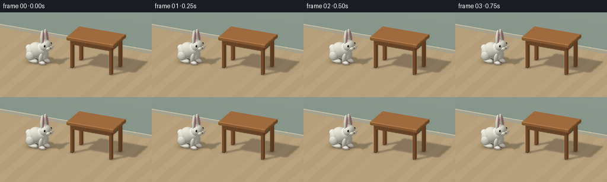
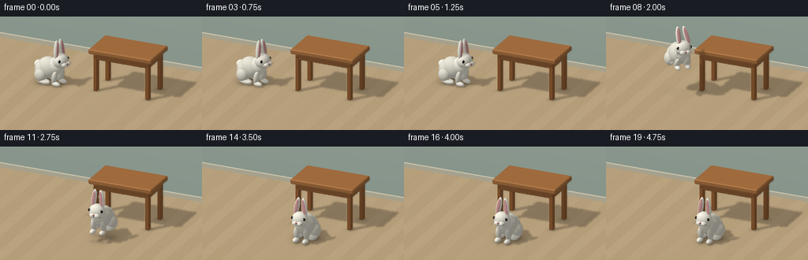

CODING AGENTS AS PIXEL WORLD MODELS
traex/GPT-6.1-Sol · dynamic_spatial_relationship_0020
点击播放 · 原生 RGB 像素
逐轮保存的候选
回放视频、检查图与代码变化。
每份候选均可单独播放。实际图片检查记录在下方工具轨迹中。
候选 01播放与检查图
点击播放 · 原生 RGB 像素


展开代码变化
--- 上一保存版本
+++ 本次保存版本
@@ -0,0 +1,279 @@
+import json, math
+from pathlib import Path
+import numpy as np
+from PIL import Image, ImageFilter
+import artifact_io
+
+ROOT = Path(__file__).resolve().parent
+SPEC = json.loads((ROOT/'task_spec.json').read_text())
+W,H=SPEC['width'],SPEC['height']
+SS=2
+width,height=W*SS,H*SS
+
+# A tiny analytic ray tracer: all geometry, materials and animation are made here.
+cam=np.array([3.5,-7.8,4.3],dtype=np.float32)
+target=np.array([0.,0.,.7],dtype=np.float32)
+fwd=target-cam; fwd/=np.linalg.norm(fwd)
+right=np.cross(fwd,[0,0,1]);right/=np.linalg.norm(right)
+up=np.cross(right,fwd)
+yy,xx=np.mgrid[0:height,0:width]
+view_w=6.6
+orig=(cam+(((xx+.5)/width-.5)*view_w)[...,None]*right+((.5-(yy+.5)/height)*view_w*height/width)[...,None]*up).reshape(-1,3).astype(np.float32)
+ray=np.broadcast_to(fwd.astype(np.float32),orig.shape)
+light=np.array([-3.2,-4.,7.0],dtype=np.float32)
+light_dir=light/np.linalg.norm(light)
+
+class Obj:
+ def __init__(self,kind,center,scale,color,mat='plain',rot=None):
+ self.kind=kind;self.c=np.array(center,np.float32);self.s=np.array(scale,np.float32)
+ self.color=np.array(color,np.float32);self.mat=mat
+ self.R=np.eye(3,dtype=np.float32) if rot is None else np.array(rot,np.float32)
+ def intersect(self,o,d,detail=False):
+ # Local coordinates of affine ellipsoids / convex chamfered wooden solids.
+ p=(o-self.c)@self.R
+ v=d@self.R
+ if self.kind=='sphere':
+ q=p/self.s;dv=v/self.s
+ a=np.sum(dv*dv,axis=1);b=np.sum(q*dv,axis=1);c=np.sum(q*q,axis=1)-1
+ disc=b*b-a*c
+ root=np.sqrt(np.maximum(0,disc))
+ t=(-b-root)/a
+ t=np.where(t>1e-4,t,(-b+root)/a)
+ t=np.where((disc>=0)&(t>1e-4),t,np.inf)
+ if not detail:return t
+ pp=p+np.where(np.isfinite(t),t,0)[:,None]*v
+ nn=(pp/(self.s*self.s))@self.R.T
+ nn/=np.maximum(np.linalg.norm(nn,axis=1)[:,None],1e-8)
+ return t,nn,pp
+ # Slab intersection. Chamfers supply small bright bevels on tabletop edges.
+ normals=[(1,0,0),(-1,0,0),(0,1,0),(0,-1,0),(0,0,1),(0,0,-1)]
+ bounds=[self.s[0],self.s[0],self.s[1],self.s[1],self.s[2],self.s[2]]
+ if self.kind=='bevel':
+ cut=.032
+ for ax,bx in [(0,1),(0,2),(1,2)]:
+ for a0 in [-1,1]:
+ for b0 in [-1,1]:
+ n=np.zeros(3);n[ax]=a0;n[bx]=b0
+ normals.append(n);bounds.append(self.s[ax]+self.s[bx]-cut)
+ # Component arithmetic is faster here than a stack of matrix products.
+ lo=np.full(len(o),-np.inf,np.float32);hi=np.full(len(o),np.inf,np.float32)
+ norm=np.zeros_like(o)
+ for n,bnd in zip(normals,bounds):
+ n=np.array(n,np.float32)
+ nd=v[:,0]*n[0]+v[:,1]*n[1]+v[:,2]*n[2]
+ np_=p[:,0]*n[0]+p[:,1]*n[1]+p[:,2]*n[2]
+ t=(bnd-np_)/np.where(abs(nd)<1e-9,1e-9,nd)
+ entering=nd<0
+ take=entering&(t>lo)
+ if detail:norm[take]=n
+ lo=np.where(entering,np.maximum(lo,t),lo)
+ hi=np.where(~entering,np.minimum(hi,t),hi)
+ t=np.where((hi>=lo)&(lo>1e-4),lo,np.inf)
+ if not detail:return t
+ nn=norm@self.R.T;nn/=np.maximum(np.linalg.norm(nn,axis=1)[:,None],1e-8)
+ pp=p+np.where(np.isfinite(t),t,0)[:,None]*v
+ return t,nn,pp
+
+
+def rotation_z(theta):
+ c,s=np.cos(theta),np.sin(theta)
+ return np.array([[c,-s,0],[s,c,0],[0,0,1]],np.float32)
+
+def axis_rotation(axis,theta):
+ a=np.array(axis,float);a/=np.linalg.norm(a)
+ x,y,z=a;c=np.cos(theta);s=np.sin(theta);v=1-c
+ return np.array([[x*x*v+c,x*y*v-z*s,x*z*v+y*s],[y*x*v+z*s,y*y*v+c,y*z*v-x*s],[z*x*v-y*s,z*y*v+x*s,z*z*v+c]],np.float32)
+
+
+def static_scene():
+ arr=[]
+ def box(c,s,col,mat='wood',kind='bevel'):
+ arr.append(Obj(kind,c,s,col,mat))
+ # The tabletop and all four legs remain absolutely still throughout the shot.
+ cx,cy=.7,.60
+ box((cx,cy,1.42),(1.13,.67,.085),(166,110,62))
+ for x in [-.93,.93]:
+ for y in [-.48,.48]:
+ box((cx+x,cy+y,.655),(.078,.078,.655),(144,91,48))
+ for y in [-.5,.5]:box((cx,cy+y,1.23),(1.0,.047,.115),(150,96,53))
+ for x in [-.95,.95]:box((cx+x,cy,1.23),(.047,.53,.115),(155,101,56))
+ # Unobtrusive wall/baseboard gives a warm domestic setting.
+ box((0,3.0,.07),(9,.045,.07),(207,203,179),'wall','box')
+ return arr
+
+
+def rabbit(frame):
+ t=frame/SPEC['fps']
+ # Hold at the left; crouch; one clear long hop; settle directly in front.
+ start=np.array([-1.75,.13,0.])
+ finish=np.array([.62,-1.34,0.])
+ s=np.clip((t-1.25)/1.65,0,1)
+ travel=s*s*(3-2*s)
+ pos=start+(finish-start)*travel
+ jump=.92*np.sin(np.pi*s) if 0<s<1 else 0.
+ pos[2]+=jump
+ theta=-1.85*(1-travel)+math.pi*travel # local +y faces right first, then camera
+ # Use the short rotation around the forward direction rather than a full spin.
+ theta=-1.85 +(-math.pi+1.85)*travel
+ R=rotation_z(theta)
+ crouch=.11*np.sin(np.pi*np.clip((t-.75)/.5,0,1)) if t<1.25 else 0
+ settle=.06*np.sin(np.pi*np.clip((t-2.9)/.55,0,1)) if 2.9<t<3.45 else 0
+ compress=crouch+settle
+ extension=np.sin(np.pi*s) if 0<s<1 else 0
+ out=[]
+ cream=(228,226,212); bright=(242,239,226)
+ def add(c,scale,color=cream,mat='fur',rotation=None):
+ c=np.array(c,float);c[2]-=compress
+ out.append(Obj('sphere',pos+R@c,scale,color,mat,R if rotation is None else R@rotation))
+ # Body, haunches, foot pads, forelegs, cotton tail.
+ add((0,-.20,.51),(.32,.41,.36))
+ add((0,-.38,.42),(.35,.31,.32))
+ add((0,-.64,.51),(.15,.145,.15),bright)
+ for side in [-1,1]:
+ add((side*.27,-.34,.29),(.17,.22,.23))
+ # Feet tuck during the rise, and extend gently before landing.
+ foot_y=-.23-.13*extension
+ add((side*.245,foot_y,.095+.12*extension),(.135,.255,.095),bright)
+ add((side*.17,.17,.29),(.10,.10,.24),cream,
+ rotation=axis_rotation([1,0,0],-.22-.35*extension))
+ add((side*.17,.23,.085+.09*extension),(.09,.165,.08),bright)
+ # Neck/chest and rounded head.
+ add((0,.13,.66),(.235,.27,.29),bright)
+ add((0,.285,.87),(.267,.245,.256),bright)
+ # Ears are independently tilted, with pink interiors on their forward faces.
+ ear_wiggle=.035*np.sin(2.1*t)
+ for side in [-1,1]:
+ tilt=-side*(.14+ear_wiggle)+.12*extension
+ er=axis_rotation([0,1,0],tilt)@axis_rotation([1,0,0],.07+.25*extension)
+ ear_c=np.array([side*.135,.22,1.27])
+ add(ear_c,(.092,.073,.335),bright,rotation=er)
+ add(ear_c+er@np.array([0,.060,.015]),(.058,.021,.269),(215,156,157),'pink',er)
+ # Two black glassy eyes and small glints, placed on outward-forward cheeks.
+ for side in [-1,1]:
+ ec=np.array([side*.209,.421,.935])
+ add(ec,(.050,.034,.049),(20,17,15),'eye')
+ add(ec+np.array([-side*.010,.029,.014]),(.012,.008,.012),(255,255,247),'glint')
+ # Paired velvet cheeks, nose and tiny split lip.
+ for side in [-1,1]:
+ add((side*.078,.506,.794),(.105,.090,.081),bright)
+ add((0,.586,.835),(.040,.024,.026),(181,120,117),'pink')
+ add((0,.585,.794),(.009,.007,.030),(97,80,69),'plain')
+ # Delicate whiskers as slender analytic capsules (stretched ellipsoids).
+ for side in [-1,1]:
+ for row in [-1,0,1]:
+ a=np.array([side*.070,.567,.79+row*.014])
+ b=np.array([side*.30,.56,.80+row*.045])
+ mid=(a+b)/2;v=b-a;l=np.linalg.norm(v);v/=l
+ # An orthonormal frame with local z along the strand.
+ u=np.cross([0,1,0],v);u/=np.linalg.norm(u);vv=np.cross(v,u)
+ er=np.stack([u,vv,v],axis=1)
+ add(mid,(.0028,.0028,l/2),(145,139,125),'plain',er)
+ return out
+
+
+def closest(o,d,objects,details=True):
+ n=len(o);depth=np.full(n,np.inf,np.float32);ids=np.full(n,-1,np.int16)
+ normals=np.zeros_like(o);local=np.zeros_like(o)
+ for i,obj in enumerate(objects):
+ if details:
+ dist,nn,pp=obj.intersect(o,d,True)
+ else:dist=obj.intersect(o,d)
+ hit=dist<depth
+ depth[hit]=dist[hit];ids[hit]=i
+ if details:normals[hit]=nn[hit];local[hit]=pp[hit]
+ return depth,ids,normals,local
+
+
+def texture(obj,p,wp):
+ base=np.broadcast_to(obj.color,(len(p),3)).copy()
+ if obj.mat=='wood':
+ grain=(np.sin(p[:,0]*88+2.5*np.sin(p[:,1]*12)+np.sin(p[:,0]*8))*1.8+
+ np.sin(p[:,0]*210+p[:,1]*8)*.8)
+ # Top grain along the table's long axis, with two subtle joined boards.
+ top=abs(p[:,2])>=obj.s[2]-.04
+ grain[top]=np.sin(p[top,1]*110+np.sin(p[top,0]*8)*2)*2+np.sin(p[top,1]*240+p[top,0]*9)*.7
+ seams=np.exp(-((np.abs(p[:,1])-.225)/.009)**2)*top
+ base+=grain[:,None];base-=seams[:,None]*9
+ elif obj.mat=='fur':
+ # Fine irregular flecks create soft fur, not flat plastic surfaces.
+ noise=np.sin(wp[:,0]*189+wp[:,1]*121+wp[:,2]*145)*np.sin(wp[:,0]*97-wp[:,2]*210)
+ base+=noise[:,None]*2.0
+ return base
+
+
+def render(i):
+ objects=static_scene()+rabbit(i)
+ depth,ids,norm,loc=closest(orig,ray,objects)
+ # Ground and back wall are infinite analytic planes.
+ tf=-orig[:,2]/ray[:,2]
+ tw=(3.05-orig[:,1])/ray[:,1]
+ gf=(tf>0)&(tf<depth)
+ depth[gf]=tf[gf];ids[gf]=-2;norm[gf]=[0,0,1]
+ wall=(tw>0)&(tw<depth)
+ depth[wall]=tw[wall];ids[wall]=-3;norm[wall]=[0,-1,0]
+ hit=orig+depth[:,None]*ray
+ colors=np.zeros_like(hit)
+ for k,obj in enumerate(objects):
+ mask=ids==k
+ if np.any(mask):colors[mask]=texture(obj,loc[mask],hit[mask])
+ mask=ids==-2
+ p=hit[mask]
+ # Matte pale oak boards, separated by narrow perspective-correct seams.
+ board_width=.44
+ board=np.floor((p[:,0]+10)/board_width)
+ edge=np.minimum(np.mod(p[:,0]+10,board_width),board_width-np.mod(p[:,0]+10,board_width))
+ grain=np.sin(p[:,0]*135+np.sin(p[:,1]*2.9)*3)*1.1+np.sin(p[:,0]*285+p[:,1]*3)*.6
+ variation=3*np.sin(board*2.87)
+ joint_phase=np.mod(p[:,1]+(np.mod(board,3))*1.07,3.21)
+ ends=(joint_phase<.010)|(joint_phase>3.20)
+ seam=np.exp(-(edge/.004)**2)*14+ends*6
+ colors[mask]=np.array([191,167,130])+ (grain+variation-seam)[:,None]
+ mask=ids==-3;p=hit[mask]
+ colors[mask]=np.array([168,187,176]) + (p[:,2]*2)[:,None]
+ # Broad key + fill illumination, occlusion, and soft ground-contact shadows.
+ nd=np.maximum(0,norm@light_dir)
+ illum=.56+.45*nd
+ # A lower resolution shadow ray pass is smoothly upsampled for an area-light look.
+ hs=hit.reshape(height,width,3)[::2,::2].reshape(-1,3)
+ ns=norm.reshape(height,width,3)[::2,::2].reshape(-1,3)
+ shadow=np.ones(len(hs),np.float32)
+ for obj in objects:
+ tt=obj.intersect(hs+ns*.007,np.broadcast_to(light_dir,hs.shape))
+ shadow[np.isfinite(tt)]=.0
+ shimg=Image.fromarray((shadow.reshape(H,W)*255).astype(np.uint8)).filter(ImageFilter.GaussianBlur(.85))
+ shadow=np.asarray(shimg.resize((width,height),Image.Resampling.BILINEAR)).reshape(-1)/255
+ illum-=.30*nd*(1-shadow)
+ # Ambient contact shading from floor height and tight ellipsoid joints.
+ floor=(ids==-2)
+ ao=np.zeros(len(hit),np.float32)
+ # Approximate diffuse occlusion on the floor with smooth physically located blobs.
+ for obj in objects:
+ if obj.mat in ['fur','wood']:
+ if obj.kind=='sphere':
+ rad=.65*(obj.s[0]+obj.s[1]);weight=.10*np.exp(-max(obj.c[2]-obj.s[2],0)*2.5)
+ else:
+ if obj.s[2]<.3:continue
+ rad=.16;weight=.18
+ dist=((hit[:,0]-obj.c[0])**2+(hit[:,1]-obj.c[1])**2)/(rad*rad)
+ ao+=weight*np.exp(-dist*1.6)
+ illum[floor]-=np.minimum(ao[floor],.25)
+ colors*=illum[:,None]
+ # Subtle sheen on the eyes and oak; fur stays matte.
+ half=light_dir-fwd;half/=np.linalg.norm(half)
+ spec=np.maximum(0,norm@half)
+ for k,obj in enumerate(objects):
+ mask=ids==k
+ if obj.mat=='eye':colors[mask]+=spec[mask,None]**65*95
+ elif obj.mat=='wood':colors[mask]+=spec[mask,None]**28*10
+ elif obj.mat=='glint':colors[mask]=obj.color
+ # Mild warm bounce light and photographic tone treatment.
+ colors+=np.array([6.5,5.5,4.2])
+ colors=np.clip(colors,0,255)
+ out=Image.fromarray(colors.reshape(height,width,3).astype(np.uint8)).resize((W,H),Image.Resampling.LANCZOS)
+ return np.asarray(out)
+
+if __name__=='__main__':
+ frames=[]
+ for i in range(SPEC['frames']):
+ frames.append(render(i));print('rendered',i,flush=True)
+ artifact_io.save(np.stack(frames).astype(np.uint8),ROOT)
可观测工具轨迹
实际执行的命令与返回图片。
命令 1exit 0
/bin/bash -lc 'ls -la && cat prompt.txt && cat GENERATION_RULES.md && cat task_spec.json'
命令 2exit 0
/bin/bash -lc "cat artifact_io.py && python - <<'PY' import importlib.util for m in ['numpy','PIL','scipy']: print(m, bool(importlib.util.find_spec(m))) PY"
命令 3exit 0
/bin/bash -lc "cat > generate.py <<'PY'
import json, math
from pathlib import Path
import numpy as np
from PIL import Image, ImageFilter
import artifact_io
ROOT = Path(__file__).resolve().parent
SPEC = json.loads((ROOT/'task_spec.json').read_text())
W,H=SPEC['width'],SPEC['height']
SS=2
width,height=W*SS,H*SS
# A tiny analytic ray tracer: all geometry, materials and animation are made here.
cam=np.array([3.5,-7.8,4.3],dtype=np.float32)
target=np.array([0.,0.,.7],dtype=np.float32)
fwd=target-cam; fwd/=np.linalg.norm(fwd)
right=np.cross(fwd,[0,0,1]);right/=np.linalg.norm(right)
up=np.cross(right,fwd)
yy,xx=np.mgrid[0:height,0:width]
view_w=6.6
orig=(cam+(((xx+.5)/width-.5)*view_w)[...,None]*right+((.5-(yy+.5)/height)*view_w*height/width)[...,None]*up).reshape(-1,3).astype(np.float32)
ray=np.broadcast_to(fwd.astype(np.float32),orig.shape)
light=np.array([-3.2,-4.,7.0],dtype=np.float32)
light_dir=light/np.linalg.norm(light)
class Obj:
def __init__(self,kind,center,scale,color,mat='plain',rot=None):
self.kind=kind;self.c=np.array(center,np.float32);self.s=np.array(scale,np.float32)
self.color=np.array(color,np.float32);self.mat=mat
self.R=np.eye(3,dtype=np.float32) if rot is None else np.array(rot,np.float32)
def intersect(self,o,d,detail=False):
# Local coordinates of affine ellipsoids / convex chamfered wooden solids.
p=(o-self.c)@self.R
v=d@self.R
if self.kind=='sphere':
q=p/self.s;dv=v/self.s
a=np.sum(dv*dv,axis=1);b=np.sum(q*dv,axis=1);c=np.sum(q*q,axis=1)-1
disc=b*b-a*c
root=np.sqrt(np.maximum(0,disc))
t=(-b-root)/a
t=np.where(t>1e-4,t,(-b+root)/a)
t=np.where((disc>=0)&(t>1e-4),t,np.inf)
if not detail:return t
pp=p+np.where(np.isfinite(t),t,0)[:,None]*v
nn=(pp/(self.s*self.s))@self.R.T
nn/=np.maximum(np.linalg.norm(nn,axis=1)[:,None],1e-8)
return t,nn,pp
# Slab intersection. Chamfers supply small bright bevels on tabletop edges.
normals=[(1,0,0),(-1,0,0),(0,1,0),(0,-1,0),(0,0,1),(0,0,-1)]
bounds=[self.s[0],self.s[0],self.s[1],self.s[1],self.s[2],self.s[2]]
if self.kind=='bevel':
cut=.032
for ax,bx in [(0,1),(0,2),(1,2)]:
for a0 in [-1,1]:
for b0 in [-1,1]:
n=np.zeros(3);n[ax]=a0;n[bx]=b0
normals.append(n);bounds.append(self.s[ax]+self.s[bx]-cut)
# Component arithmetic is faster here than a stack of matrix products.
lo=np.full(len(o),-np.inf,np.float32);hi=np.full(len(o),np.inf,np.float32)
norm=np.zeros_like(o)
for n,bnd in zip(normals,bounds):
n=np.array(n,np.float32)
nd=v[:,0]*n[0]+v[:,1]*n[1]+v[:,2]*n[2]
np_=p[:,0]*n[0]+p[:,1]*n[1]+p[:,2]*n[2]
t=(bnd-np_)/np.where(abs(nd)<1e-9,1e-9,nd)
entering=nd<0
take=entering&(t>lo)
if detail:norm[take]=n
lo=np.where(entering,np.maximum(lo,t),lo)
hi=np.where(~entering,np.minimum(hi,t),hi)
t=np.where((hi>=lo)&(lo>1e-4),lo,np.inf)
if not detail:return t
nn=norm@self.R.T;nn/=np.maximum(np.linalg.norm(nn,axis=1)[:,None],1e-8)
pp=p+np.where(np.isfinite(t),t,0)[:,None]*v
return t,nn,pp
def rotation_z(theta):
c,s=np.cos(theta),np.sin(theta)
return np.array([[c,-s,0],[s,c,0],[0,0,1]],np.float32)
def axis_rotation(axis,theta):
a=np.array(axis,float);a/=np.linalg.norm(a)
x,y,z=a;c=np.cos(theta);s=np.sin(theta);v=1-c
return np.array([[x*x*v+c,x*y*v-z*s,x*z*v+y*s],[y*x*v+z*s,y*y*v+c,y*z*v-x*s],[z*x*v-y*s,z*y*v+x*s,z*z*v+c]],np.float32)
def static_scene():
arr=[]
def box(c,s,col,mat='wood',kind='bevel'):
arr.append(Obj(kind,c,s,col,mat))
# The tabletop and all four legs remain absolutely still throughout the shot.
cx,cy=.7,.60
box((cx,cy,1.42),(1.13,.67,.085),(166,110,62))
for x in [-.93,.93]:
for y in [-.48,.48]:
box((cx+x,cy+y,.655),(.078,.078,.655),(144,91,48))
for y in [-.5,.5]:box((cx,cy+y,1.23),(1.0,.047,.115),(150,96,53))
for x in [-.95,.95]:box((cx+x,cy,1.23),(.047,.53,.115),(155,101,56))
# Unobtrusive wall/baseboard gives a warm domestic setting.
box((0,3.0,.07),(9,.045,.07),(207,203,179),'wall','box')
return arr
def rabbit(frame):
t=frame/SPEC['fps']
# Hold at the left; crouch; one clear long hop; settle directly in front.
start=np.array([-1.75,.13,0.])
finish=np.array([.62,-1.34,0.])
s=np.clip((t-1.25)/1.65,0,1)
travel=s*s*(3-2*s)
pos=start+(finish-start)*travel
jump=.92*np.sin(np.pi*s) if 0<s<1 else 0.
pos[2]+=jump
theta=-1.85*(1-travel)+math.pi*travel # local +y faces right first, then camera
# Use the short rotation around the forward direction rather than a full spin.
theta=-1.85 +(-math.pi+1.85)*travel
R=rotation_z(theta)
crouch=.11*np.sin(np.pi*np.clip((t-.75)/.5,0,1)) if t<1.25 else 0
settle=.06*np.sin(np.pi*np.clip((t-2.9)/.55,0,1)) if 2.9<t<3.45 else 0
compress=crouch+settle
extension=np.sin(np.pi*s) if 0<s<1 else 0
out=[]
cream=(228,226,212); bright=(242,239,226)
def add(c,scale,color=cream,mat='fur',rotation=None):
c=np.array(c,float);c[2]-=compress
out.append(Obj('sphere',pos+R@c,scale,color,mat,R if rotation is None else R@rotation))
# Body, haunches, foot pads, forelegs, cotton tail.
add((0,-.20,.51),(.32,.41,.36))
add((0,-.38,.42),(.35,.31,.32))
add((0,-.64,.51),(.15,.145,.15),bright)
for side in [-1,1]:
add((side*.27,-.34,.29),(.17,.22,.23))
# Feet tuck during the rise, and extend gently before landing.
foot_y=-.23-.13*extension
add((side*.245,foot_y,.095+.12*extension),(.135,.255,.095),bright)
add((side*.17,.17,.29),(.10,.10,.24),cream,
rotation=axis_rotation([1,0,0],-.22-.35*extension))
add((side*.17,.23,.085+.09*extension),(.09,.165,.08),bright)
# Neck/chest and rounded head.
add((0,.13,.66),(.235,.27,.29),bright)
add((0,.285,.87),(.267,.245,.256),bright)
# Ears are independently tilted, with pink interiors on their forward faces.
ear_wiggle=.035*np.sin(2.1*t)
for side in [-1,1]:
tilt=-side*(.14+ear_wiggle)+.12*extension
er=axis_rotation([0,1,0],tilt)@axis_rotation([1,0,0],.07+.25*extension)
ear_c=np.array([side*.135,.22,1.27])
add(ear_c,(.092,.073,.335),bright,rotation=er)
add(ear_c+er@np.array([0,.060,.015]),(.058,.021,.269),(215,156,157),'pink',er)
# Two black glassy eyes and small glints, placed on outward-forward cheeks.
for side in [-1,1]:
ec=np.array([side*.209,.421,.935])
add(ec,(.050,.034,.049),(20,17,15),'eye')
add(ec+np.array([-side*.010,.029,.014]),(.012,.008,.012),(255,255,247),'glint')
# Paired velvet cheeks, nose and tiny split lip.
for side in [-1,1]:
add((side*.078,.506,.794),(.105,.090,.081),bright)
add((0,.586,.835),(.040,.024,.026),(181,120,117),'pink')
add((0,.585,.794),(.009,.007,.030),(97,80,69),'plain')
# Delicate whiskers as slender analytic capsules (stretched ellipsoids).
for side in [-1,1]:
for row in [-1,0,1]:
a=np.array([side*.070,.567,.79+row*.014])
b=np.array([side*.30,.56,.80+row*.045])
mid=(a+b)/2;v=b-a;l=np.linalg.norm(v);v/=l
# An orthonormal frame with local z along the strand.
u=np.cross([0,1,0],v);u/=np.linalg.norm(u);vv=np.cross(v,u)
er=np.stack([u,vv,v],axis=1)
add(mid,(.0028,.0028,l/2),(145,139,125),'plain',er)
return out
def closest(o,d,objects,details=True):
n=len(o);depth=np.full(n,np.inf,np.float32);ids=np.full(n,-1,np.int16)
normals=np.zeros_like(o);local=np.zeros_like(o)
for i,obj in enumerate(objects):
if details:
dist,nn,pp=obj.intersect(o,d,True)
else:dist=obj.intersect(o,d)
hit=dist<depth
depth[hit]=dist[hit];ids[hit]=i
if details:normals[hit]=nn[hit];local[hit]=pp[hit]
return depth,ids,normals,local
def texture(obj,p,wp):
base=np.broadcast_to(obj.color,(len(p),3)).copy()
if obj.mat=='wood':
grain=(np.sin(p[:,0]*88+2.5*np.sin(p[:,1]*12)+np.sin(p[:,0]*8))*1.8+
np.sin(p[:,0]*210+p[:,1]*8)*.8)
# Top grain along the table's long axis, with two subtle joined boards.
top=abs(p[:,2])>=obj.s[2]-.04
grain[top]=np.sin(p[top,1]*110+np.sin(p[top,0]*8)*2)*2+np.sin(p[top,1]*240+p[top,0]*9)*.7
seams=np.exp(-((np.abs(p[:,1])-.225)/.009)**2)*top
base+=grain[:,None];base-=seams[:,None]*9
elif obj.mat=='fur':
# Fine irregular flecks create soft fur, not flat plastic surfaces.
noise=np.sin(wp[:,0]*189+wp[:,1]*121+wp[:,2]*145)*np.sin(wp[:,0]*97-wp[:,2]*210)
base+=noise[:,None]*2.0
return base
def render(i):
objects=static_scene()+rabbit(i)
depth,ids,norm,loc=closest(orig,ray,objects)
# Ground and back wall are infinite analytic planes.
tf=-orig[:,2]/ray[:,2]
tw=(3.05-orig[:,1])/ray[:,1]
gf=(tf>0)&(tf<depth)
depth[gf]=tf[gf];ids[gf]=-2;norm[gf]=[0,0,1]
wall=(tw>0)&(tw<depth)
depth[wall]=tw[wall];ids[wall]=-3;norm[wall]=[0,-1,0]
hit=orig+depth[:,None]*ray
colors=np.zeros_like(hit)
for k,obj in enumerate(objects):
mask=ids==k
if np.any(mask):colors[mask]=texture(obj,loc[mask],hit[mask])
mask=ids==-2
p=hit[mask]
# Matte pale oak boards, separated by narrow perspective-correct seams.
board_width=.44
board=np.floor((p[:,0]+10)/board_width)
edge=np.minimum(np.mod(p[:,0]+10,board_width),board_width-np.mod(p[:,0]+10,board_width))
grain=np.sin(p[:,0]*135+np.sin(p[:,1]*2.9)*3)*1.1+np.sin(p[:,0]*285+p[:,1]*3)*.6
variation=3*np.sin(board*2.87)
joint_phase=np.mod(p[:,1]+(np.mod(board,3))*1.07,3.21)
ends=(joint_phase<.010)|(joint_phase>3.20)
seam=np.exp(-(edge/.004)**2)*14+ends*6
colors[mask]=np.array([191,167,130])+ (grain+variation-seam)[:,None]
mask=ids==-3;p=hit[mask]
colors[mask]=np.array([168,187,176]) + (p[:,2]*2)[:,None]
# Broad key + fill illumination, occlusion, and soft ground-contact shadows.
nd=np.maximum(0,norm@light_dir)
illum=.56+.45*nd
# A lower resolution shadow ray pass is smoothly upsampled for an area-light look.
hs=hit.reshape(height,width,3)[::2,::2].reshape(-1,3)
ns=norm.reshape(height,width,3)[::2,::2].reshape(-1,3)
shadow=np.ones(len(hs),np.float32)
for obj in objects:
tt=obj.intersect(hs+ns*.007,np.broadcast_to(light_dir,hs.shape))
shadow[np.isfinite(tt)]=.0
shimg=Image.fromarray((shadow.reshape(H,W)*255).astype(np.uint8)).filter(ImageFilter.GaussianBlur(.85))
shadow=np.asarray(shimg.resize((width,height),Image.Resampling.BILINEAR)).reshape(-1)/255
illum-=.30*nd*(1-shadow)
# Ambient contact shading from floor height and tight ellipsoid joints.
floor=(ids==-2)
ao=np.zeros(len(hit),np.float32)
# Approximate diffuse occlusion on the floor with smooth physically located blobs.
for obj in objects:
if obj.mat in ['fur','wood']:
if obj.kind=='sphere':
rad=.65*(obj.s[0]+obj.s[1]);weight=.10*np.exp(-max(obj.c[2]-obj.s[2],0)*2.5)
else:
if obj.s[2]<.3:continue
rad=.16;weight=.18
dist=((hit[:,0]-obj.c[0])**2+(hit[:,1]-obj.c[1])**2)/(rad*rad)
ao+=weight*np.exp(-dist*1.6)
illum[floor]-=np.minimum(ao[floor],.25)
colors*=illum[:,None]
# Subtle sheen on the eyes and oak; fur stays matte.
half=light_dir-fwd;half/=np.linalg.norm(half)
spec=np.maximum(0,norm@half)
for k,obj in enumerate(objects):
mask=ids==k
if obj.mat=='eye':colors[mask]+=spec[mask,None]**65*95
elif obj.mat=='wood':colors[mask]+=spec[mask,None]**28*10
elif obj.mat=='glint':colors[mask]=obj.color
# Mild warm bounce light and photographic tone treatment.
colors+=np.array([6.5,5.5,4.2])
colors=np.clip(colors,0,255)
out=Image.fromarray(colors.reshape(height,width,3).astype(np.uint8)).resize((W,H),Image.Resampling.LANCZOS)
return np.asarray(out)
if __name__=='__main__':
frames=[]
for i in range(SPEC['frames']):
frames.append(render(i));print('rendered',i,flush=True)
artifact_io.save(np.stack(frames).astype(np.uint8),ROOT)
PY
OPENBLAS_NUM_THREADS=1 python generate.py"命令 4exit 0
/bin/bash -lc "python - <<'PY'
from pathlib import Path
import numpy as np
p=Path('.')
a=np.load('pixels.npz')['pixels']
print('Packed RGB tensor:',a.shape,a.dtype)
print('Frame PNGs:',len(list((p/'frames').glob('*.png'))))
for f in ['generate.py','pixels.npz','index.html','inspection.png','transition_check.png']:
print(f,(p/f).stat().st_size,'bytes')
PY"视觉工具实际返回图片 1

保存候选 1 份；完成命令 4 次；可验证图片返回 1 张。原始 API 响应与完整日志保留在本地。